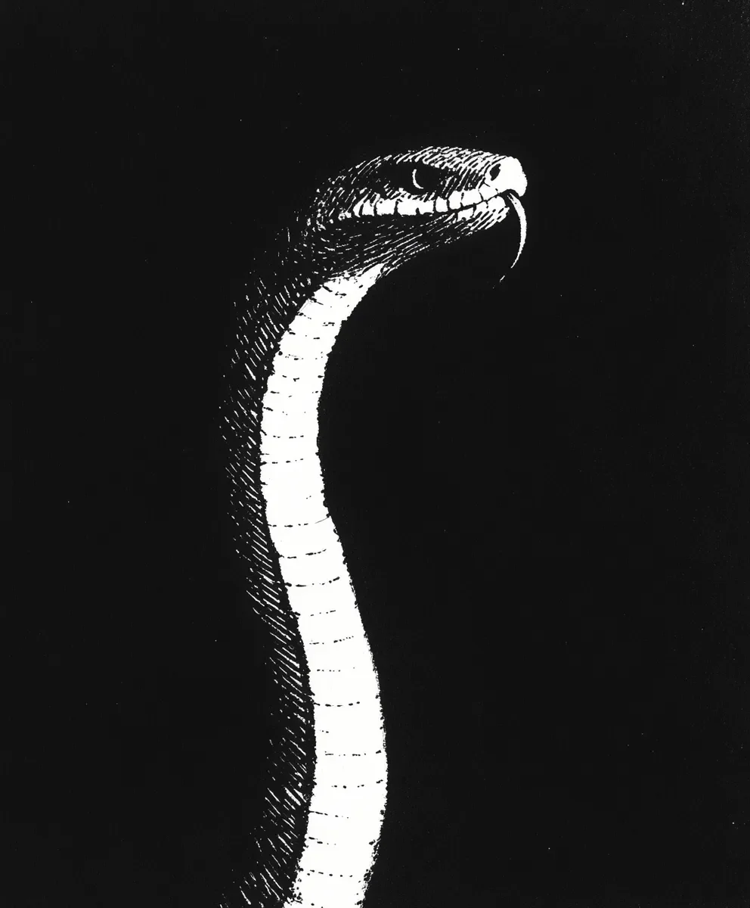

패션쇼를 망치는 방법은 많지만, ‘미션 임파서블’ 주제곡을 흥얼거리며 환풍구를 기어 다니는 건 보통 그 중 하나가 아니다. 보그 잡지를 구독하고 과대망상에 빠진 검은 맘바 뱀 세바스찬은 밀라노 패션 위크에서 자신의 존재감을 각인시키기로 결심했다.
[There are many ways to crash a fashion show, but slithering through the air vent while humming “Mission Impossible” isn’t typically one of them. Sebastian, a black mamba with delusions of grandeur and a subscription to Vogue, was determined to make his mark on Milan Fashion Week.]
최상급 올리브 오일로 광택을 낸 그의 비늘은 먼지 쌓인 환풍구를 통해 스며드는 희미한 빛을 받아 반짝였고, 그는 '블루 스틸’ 표정을 연습하고 있었다.
[His scales, polished to a high sheen with premium olive oil, caught what little light filtered through the dusty vent as he practiced his best “Blue Steel” expression.]
테라리움에 있을 때는 계획이 너무나 단순해 보였다: 행사장에 잠입해서 런웨이 사진 몇 장에 포토밤을 터뜨리고 패션계의 차세대 스타가 되는 것. “뱀이 지금 엄청 뜨고 있어"라며 열램프 앞에서 자신만의 시그니처 머리 기울이기를 연습하면서 스스로를 안심시켰다.
[The plan had seemed so simple back in his terrarium: infiltrate the venue, photo-bomb a few runway shots, and become the next big thing in fashion. "Snakes are so hot right now,” he’d assured himself while practicing his signature head-tilt in front of his heat lamp.]
하지만 지금, 수십 년 된 먼지 뭉치들과 매우 비판적으로 보이는 거미 사이에 끼어 있자니 자신의 인생 선택들에 대해 의문이 들기 시작했다. 샤넬 리본처럼 보이는 것을 달고 있는 거미는 여덟 개의 눈을 굴리며 그저 한심하다는 듯 쳐다보았다.
[But now, wedged between decades of dust bunnies and what appeared to be a very judgmental spider, Sebastian was beginning to question his life choices. The spider, wearing what looked suspiciously like a tiny Chanel bow, merely rolled all eight eyes.]
캣워크 위의 환풍구를 통해 나온 세바스찬은 혼돈의 한가운데에 있는 자신을 발견했다. 아래에서는 모델들이 마치 나무 바닥 위의 화난 쥐들처럼 힐 소리를 내며 걸어다니고 있었다. 조명은 눈부셨고, 음악은 쿵쿵거렸으며, 앞줄 어딘가에서는 안나 윈투어의 선글라스가 희망의 등대처럼 빛나고 있었다.
[Emerging through a vent above the catwalk, Sebastian found himself in the midst of chaos. Models strutted below, their heels click-clacking like angry mice on hardwood. The lights were blinding, the music was thumping, and somewhere in the front row, Anna Wintour’s sunglasses gleamed like a beacon of hope.]
세바스찬은 깊은 숨을 들이쉬고 자신의 화려한 등장을 준비했다가 갑자기 재채기를 했다 - 그러다가 재활용 커피 필터로만 만든 것처럼 보이는 드레스를 입은 마른 모델의 어깨 위로 직접 날아가 버렸다.
[Sebastian took a deep breath, readied himself for his grand entrance, and promptly sneezed – launching himself directly onto the shoulder of a waif-like model wearing what appeared to be a dress made entirely of recycled coffee filters.]
모델은 그럴 만한 자격이 있었다. “달링, 그거 빈티지예요?"라고 완벽하게 굳은 입술로 속삭이며, 마치 혼란스러워하는 파충류를 액세서리로 하는 것이 최고의 패션인 것처럼 계속 걸어갔다. 군중들은 일제히 숨을 들이켰고, 이 순간을 포착하기 위해 휴대폰을 들어올렸다.
[The model, to her credit, didn’t miss a beat. "Darling, is that vintage?” she whispered through perfectly frozen lips, continuing her walk as if accessorizing with a confused reptile was the height of fashion. The crowd gasped collectively, phones raised to capture the moment.]
세바스찬은 약간의 품위를 유지하려 노력하며 연습했던 포즈를 취하고 최대한 매혹적으로 보이길 바라며 혀를 날름거렸다. 눈 귀퉁이로 보니 환풍구 속의 거미가 다리 네 개로 느릿느릿 박수를 치면서 나머지 네 개의 다리로는 실시간 스트리밍을 하고 있었다.
[Sebastian, trying to maintain some dignity, struck his practiced pose and flicked his tongue out in what he hoped was a sultry manner. From the corner of his eye, he could see the spider in the vent, slow-clapping with four of her legs while live-streaming with the other four.]
다음 날 아침, #SnakeWear가 소셜 미디어에서 트렌드가 되었고, 세바스찬은 세 개의 주요 디자이너들로부터 섭외 요청을 받았다. 이제 자신을 그의 에이전트로 자처한 거미는 (자신을 마담 아라크네라 부르며) 뱀에서 영감을 받은 벨트 라인의 계약을 협상하고 있었다 - 물론 윤리적으로 조달된 것들이었다.
[By morning, #SnakeWear was trending on social media, and Sebastian had booking requests from three major designers. The spider, now his self-appointed agent (and calling herself Madame Arachne), was negotiating his contract for a line of snake-inspired belts – ethically sourced, of course.]
미니 인피니티 풀과 유기농 쥐 배달 서비스를 갖춘 새로 업그레이드된 테라리움에서 휴식을 취하면서, 세바스찬은 때로는 문자 그대로 우연히 떨어진 곳에서 최고의 패션 스테이트먼트가 나온다는 것을 곱씹어볼 수밖에 없었다. 거미는 현명한 듯 고개를 끄덕이며, 이미 다음 시즌 컬렉션을 계획하면서 자신을 위한 작은 베르사체 스타일의 거미줄을 짜고 있었다.
[As he lounged in his newly upgraded terrarium, complete with a mini infinity pool and organic mouse delivery service, Sebastian couldn’t help but muse that sometimes the best fashion statements were the ones you literally fell into. The spider just nodded sagely, already planning his next season’s collection while knitting herself a tiny Versace-inspired web.]